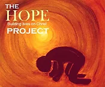

<mat-grid-list cols="1" rowHeight="1:1">
    
</mat-grid-list>

<mat-grid-list cols="1" id="mainVideoGrid"  rowHeight="1:1" id="div_one">
    <mat-grid-tile>
        <div class="container" id="js_youTubeFrame">
            <iframe width="893" height="502" src="https://www.youtube.com/embed/oQ5sryTG5aY" title="Freedom from past hurts, depression, meth and other drugs." frameborder="0" allow="accelerometer; autoplay; clipboard-write; encrypted-media; gyroscope; picture-in-picture" allowfullscreen></iframe>
        </div>
    </mat-grid-tile>
</mat-grid-list>
